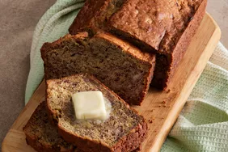

Banana Bread
This banana bread recipe creates the most delicious, moist loaf with loads
of banana flavor. Why compromise the banana flavor? Friends and family
love my recipe and say it's by far the best! It tastes wonderful toasted.
Enjoy!
Ingredients
- Flour: All-purpose flour gives the banana bread structure.
- Baking soda: Baking soda acts as a leavener.
- Salt: A pinch of salt enhances the overall flavor.
- Butter: A stick of butter lends richness.
-
Brown sugar: Brown sugar sweetens things up and adds a hint of warmth.
-
Eggs: Eggs act as a binding agent, which means they hold the batter
together.
- Bananas: Of course, you'll need bananas!
Steps
- Combine the dry ingredients in one bowl.
- Beat the butter and sugar in another bowl.
- Add the eggs and mashed bananas.
- Add the wet mixture to the dry mixture.
- Pour the batter into a loaf pan and bake in a preheated oven.